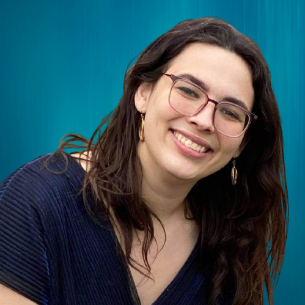

Kathleen Isenegger

kti3@illinois.edu
PhD Student at University of Illinois Urbana-Champaign
I am interested in computing education research, with a focus on broadening participation in computing. My current work studies students’ sense of belonging in CS and social-psychological interventions to change students’ beliefs about the potential to do social good and collaborate with others in a computing career.